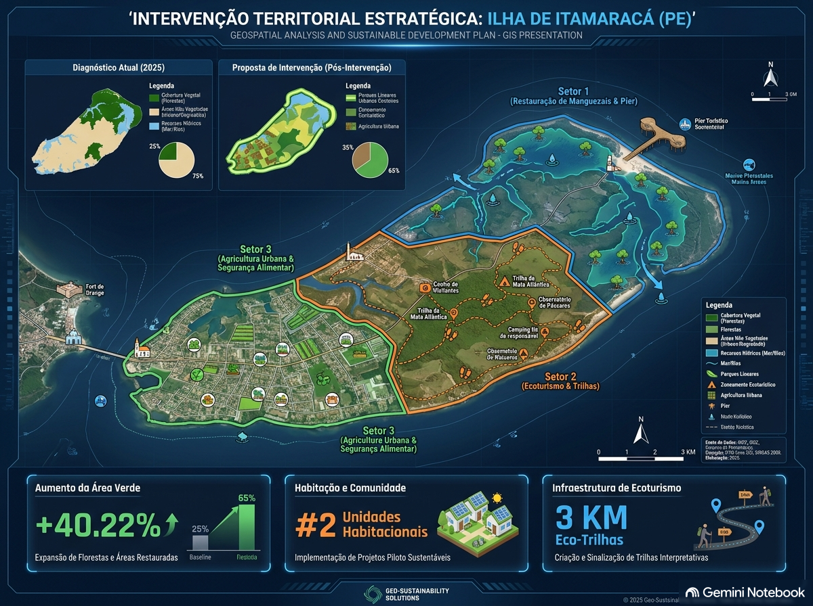

Seção 5 — Planejamento Operacional das Intervenções e Viabilidade Econômica
Este documento contou com o auxílio de ferramenta de inteligência artificial exclusivamente para suporte à formatação na linguagem Quarto (.qmd) e revisão ortográfica, mantendo-se integralmente a autoria, a fundamentação científica e os dados originais do diagnóstico de campo e do PIBIC UFPE.
1 1. Detalhamento das Técnicas e Ações de Intervenção
Considerando a classificação da Ilha de Itamaracá como um Ecossistema Híbrido com alta resiliência biótica (Hobbs et al., 2006; Suganuma & Durigan, 2018), as intervenções operacionais priorizam a mitigação de estressores abióticos e a restauração assistida, dispensando plantios homogêneos de grande escala em favor de soluções baseadas na natureza (SbN).
1.1 1.1 Solução de Infraestrutura Verde: Wetlands Construídas (Biofiltros)
- Objetivo: Tratar efluentes sanitários domésticos in natura descarregados diretamente nos canais estuarinos da orla periurbana.
- Metodologia: Instalação de sistemas de alagados construídos de fluxo subsuperficial horizontal localizados na zona de transição urbano-mangue.
- Mecanismo Ecológico: O efluente passa por leito filtrante de brita e areia cultivado com macrófitas aquáticas nativas (Typha domingensis e Cyperus papyrus). As raízes promovem a oxigenação do meio e a remoção de matéria orgânica (redução de 80-90% da DBO), nutrientes (N e P) e coliformes por assimilação biológica e filtragem física, eliminando os focos de anoxia no sedimento de mangue.
1.2 1.2 Controle Mecânico de Contaminação: Ecobarreiras Flutuantes Comunitárias
- Objetivo: Interceptar e reter resíduos sólidos urbanos (macroplásticos, garrafas PET, embalagens) transportados pela drenagem urbana e pelas marés antes da sua fixação no sistema radicular de Rhizophora mangle.
- Metodologia: Montagem de barreiras flutuantes utilizando galões plásticos reutilizados de 20L interligados por redes de alta resistência, ancoradas nas fozes dos principais canais de drenagem urbana.
- Operacionalização: Coleta e triagem semanal dos resíduos retidos realizada em parceria com a Colônia de Pescadores Z-11 e cooperativas locais de catadores, destinando o plástico para reciclagem.
1.3 1.3 Restauração Assistida e Manejo da Vegetação Halófita
- Objetivo: Desobstruir o fluxo hídrico e restabelecer a hidrodinâmica entremarés para favorecer a dispersão e o recrutamento espontâneo de propágulos nativos.
- Ações:
- Desobstrução de Canais de Maré: Remoção manual de entulhos e sedimentos compactados que impedem o fluxo de maré em clareiras de borda.
- Nucleação com Módulos de Bambu (Protetores de Propágulos): Em trechos de borda sujeitos a forte erosão por marés ou pisoteio, instalaremos pequenos núcleos de estacas de bambu para retenção física de propágulos de Rhizophora mangle, Avicennia schaueriana e Laguncularia racemosa trazidos naturalmente pelas águas.
1.4 Mapeamento da Proposta de Intervenção

2 2. Cronograma Operacional Graduado (Anos 1 a 10)
O plano de ação está estruturado em quatro fases graduadas para assegurar a sustentabilidade técnica e social ao longo de uma década:
| Fase | Período | Ações Principais | Metas de Curto/Longo Prazo |
|---|---|---|---|
| Fase 1: Mobilização e Licenciamento | Ano 1 | Mobilização comunitária, criação do Comitê de Bacia/APA e licenciamento ambiental Simplificado junto à CPRH. | 100% dos atores mapeados formalizados; licença concedida. |
| Fase 2: Implantação de Infraestrutura | Anos 1–2 | Construção das wetlands piloto e instalação das 4 ecobarreiras prioritárias na orla. | Intercepção de 80% do lixo flutuante; início do tratamento de efluentes. |
| Fase 3: Restauração Assistida e Manejo | Anos 2–5 | Desobstrução hidrológica e instalação de núcleos de retenção de propágulos nas clareiras. | Recuperação do dossel em 50% das clareiras identificadas. |
| Fase 4: Consolidação e Monitoramento | Anos 5–10 | Monitoramento da qualidade da água, estoque do berçário de Callinectes marginatus e transferência de gestão. | Cobertura florestal mantida >30%; autonomia da comunidade na manutenção. |
3 3. Análise de Viabilidade Financeira e Orçamento Discriminado
A opção por soluções baseadas na natureza e restauração assistida reduz drasticamente os custos quando comparada a projetos tradicionais de engenharia dura e plantio total.
3.1 Orçamento Estimativo de Implantação e Manutenção (Ciclo de 5 Anos)
| Item / Categoria | Descrição / Especificação | Quantidade / Unidade | Custo Unitário (R\() | Custo Total (R\)) | |
|---|---|---|---|---|
| Insumos para Biofiltros | Brita, areia, tubulações de PVC, geomembrana impermeabilizante e mudas de macrófitas. | 2 unidades piloto | R$ 12.000,00 | R$ 24.000,00 |
| Materiais para Ecobarreiras | Galões de 20L, cordas de polietileno, redes de pesca recicladas e poitas de concreto. | 4 unidades | R$ 1.500,00 | R$ 6.000,00 |
| Mão de Obra Local | Contratação de pescadores e moradores para montagem e manutenção (diárias). | 120 diárias / ano | R$ 150,00 | R$ 18.000,00 |
| Módulos de Nucleação | Estacas de bambu e amarras biodegradáveis para retenção de propágulos. | 50 núcleos | R$ 60,00 | R$ 3.000,00 |
| Equipamentos de Proteção (EPIs) | Botas de borracha, luvas reforçadas e coletes salva-vidas. | 20 kits | R$ 250,00 | R$ 5.000,00 |
| Análises de Água e Solo | Monitoramento semestral de DBO, salinidade, coliformes e oxigênio dissolvido. | 10 campanhas | R$ 1.200,00 | R$ 12.000,00 |
| Oficinas de Educação Ambiental | Capacitação e material didático para a comunidade e escolas da ilha. | 6 oficinas | R$ 1.000,00 | R$ 6.000,00 |
| Total Estimado (5 Anos) | — | — | — | R$ 74.000,00 |
4 4. Fontes Potenciais de Financiamento
O orçamento enxuto de R$ 74.000,00 viabiliza a captação de recursos por múltiplas vias públicas e privadas:
- Compensação Ambiental (SEUC / CPRH): Recursos oriundos de medidas compensatórias de empreendimentos imobiliários ou industriais licenciados na Região Metropolitana do Recife ou no Complexo de Goiana.
- Fundo Estadual de Meio Ambiente de Pernambuco (FEMA/PE): Submissão da proposta aos editais anuais voltados para Unidades de Conservação e Recursos Hídricos.
- Fundo Nacional do Meio Ambiente (FNMA / MMA): Linhas de financiamento para recuperação de Áreas de Preservação Permanente (APP) e ecossistemas costeiros/estuarinos.
- Parcerias Público-Privadas (Setor Turístico e Imobiliário): Ações de responsabilidade socioambiental de hotéis, marinas e pousadas da Ilha de Itamaracá interessadas na balneabilidade da orla e preservação da paisagem.